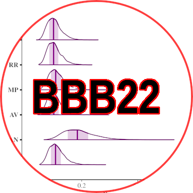

Bristol Bayes for the Brain13 / 14 / 15 June 2022Schedule
This event is part of the Jean Golding Institute data week: There is a sign-up ticketing system for the events and you should order tickets if you can, but, apart from the tutorial, this isn't crucial. |